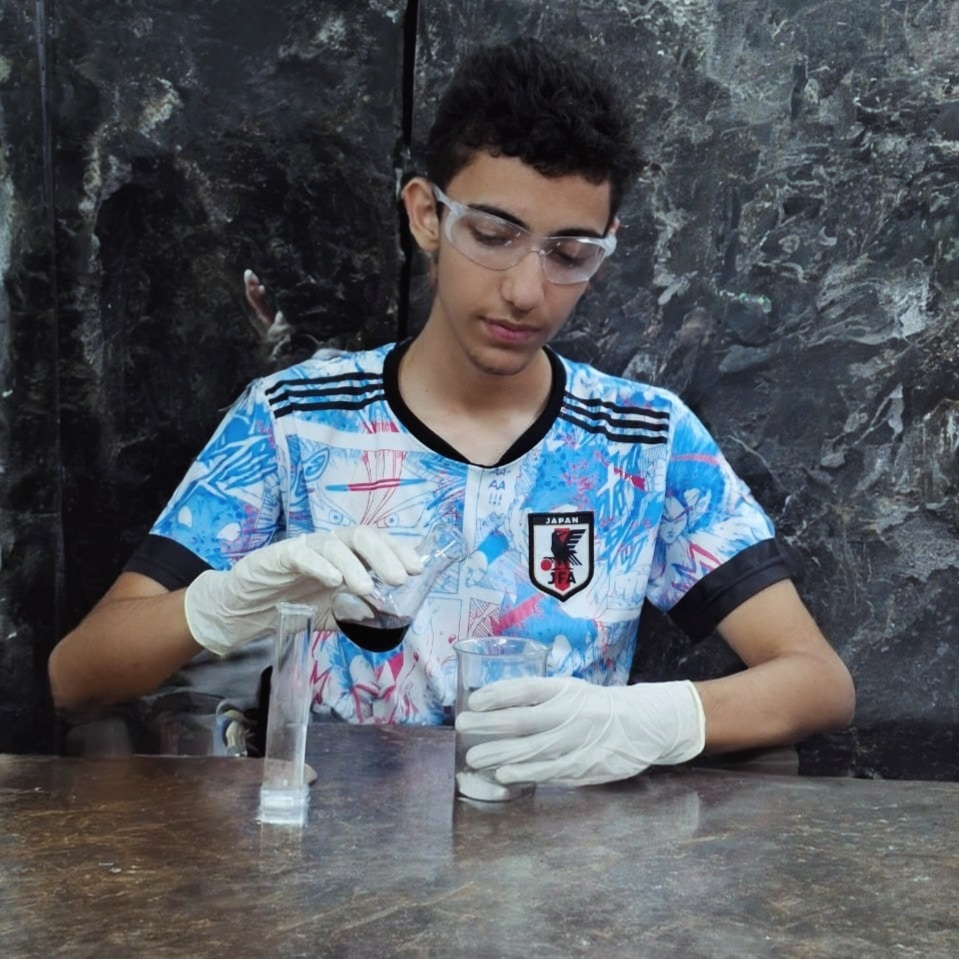

Sobre Nós
Este site foi criado como parte de uma atividade com a proposta para desenvolver um dicionário químico interativo. A seguir, falaremos um pouco sobre os criadores deste projeto em específico:

Emanuel Ferreira Moraes
Natural de Fernando Prestes-SP, fluente em inglês, formado em Marketing pelo SEBRAE e duas vezes vencedor do campeonato regional de futsal. Atualmente trabalha como garçom e estuda na ETEC Elias Nechar.
Pedro Enzo Tafuri
Goleiro do Clube Atlético Estudantes Catanduva (CAEC), vencedor de várias copas, e ex-aluno da Escola Estadual Nicola Mastrocola, em Catanduva-SP.